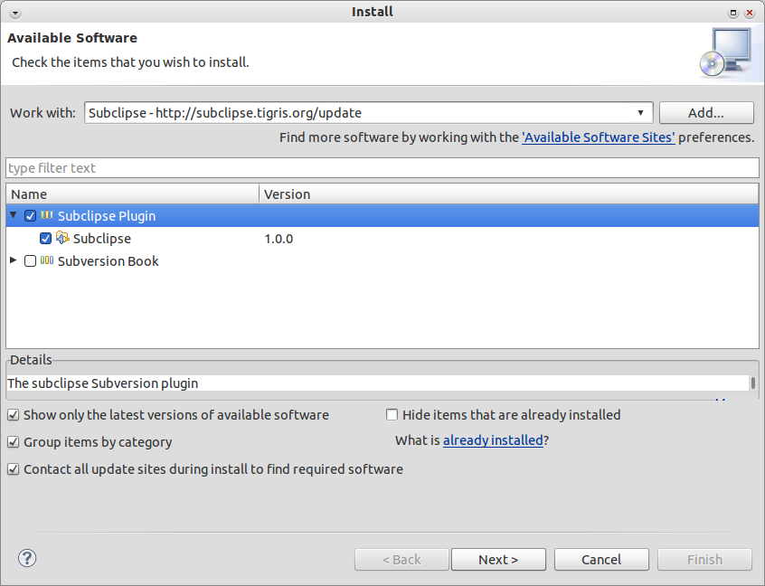
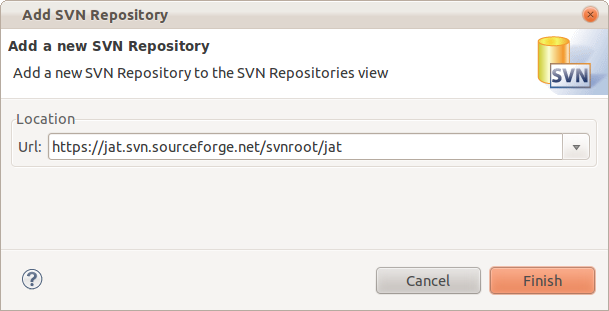
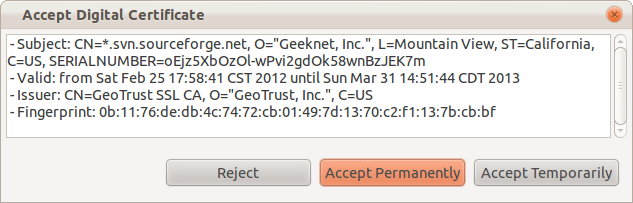
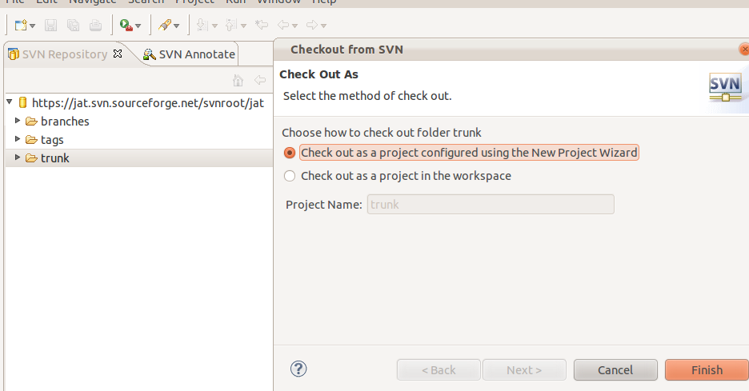
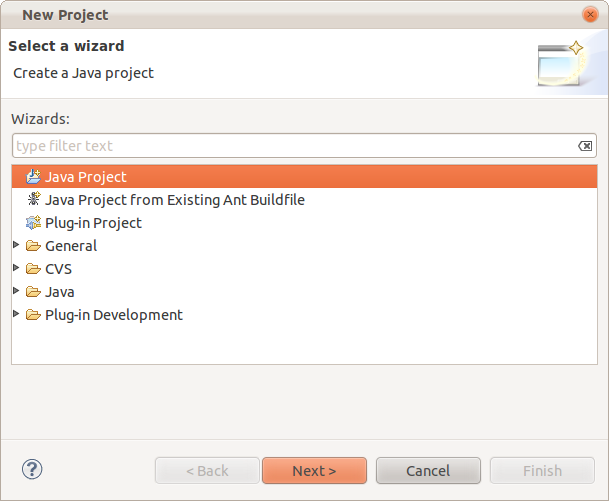
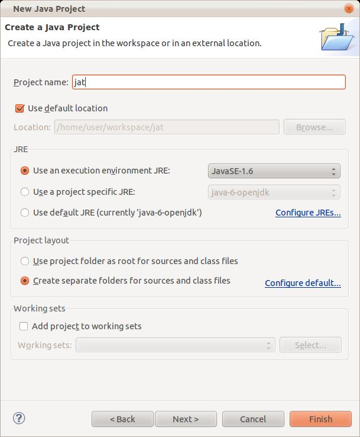
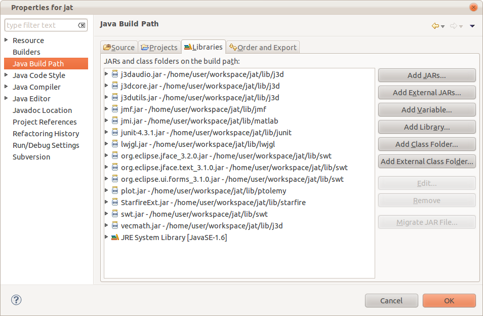

This document describes how to download and install JAT from the Subversion repository. This document assumes that you are using Eclipse 3.7.0.
The major steps involved include:
1. Install subclipse plugin for Eclipse.
2. Connect to the Subversion Repository.
3. Checking out jatcore and setting up a Java Project in Eclipse.
4. Checking out jatcontrib and setting up a Java Project in Eclipse.
1. In Eclipse, choose Help->Software Updates->Find and Install… as shown below.
Alternate text
2. On the Install/Update dialog box, choose: Search for new features to install and click the Next > button.
3. On the Install dialog box, click on the New Remote Site… button.
4. On the New Update Site dialog box, enter: Subclipse Plugin for the Name and http://subclipse.tigris.org/update for the URL as shown below.
5. In the Install dialog box, click on Subclipse Plugin to expand it. Then under Sites to include in search, check the boxes for Subclipse Plugin, Subversion Book and Subclipse Plugin as shown below. Click the Next > button.

6. In the Install dialog box, under Select the features to install, check the boxes for Subclipse and Version Control with Subversion as shown below. Click the Next > button.
Alternate text
7. Click on Finish. The plugin should be installed and ready to go.
1. In Eclipse, select Window -> Open Perspective -> Other…
2. In the Select Perspective dialog box, select SVN Repository Exploring and click OK.
Alternate text
3. Right click in the SVN Repository window. Choose New-> Repository Location …
4. In the Add SVN Repository dialog box, enter
https://jat.svn.sourceforge.net/svnroot/jat
in the Url textbox.

Accept the certificate.

1. In the SVN Repository window, right click on Trunk
2. In the pop-up menu, select Check out
3. In the Checkout from SVN dialog box, select Check out as project configured using the New Project Wizard and click on Finish.
Note: It is important to use the project wizard so that the project becomes a Java project.
4. In the New Project dialog box, select Java Project and click on Next >.

5. In the New Java Project dialog box, enter jat for the Project Name.

Click on the Finish > button.
You should be redirected to the Java perspective.
5. JAT uses several libraries that are contained in jar files. You need to inform Eclipse where these jar files are located.
Choose the menu Project -> Properties and select the Libraries tab. Click on Add External JARs and add all of the jar files that are stored in the lib folder

This should clear all of the errors that were reported.